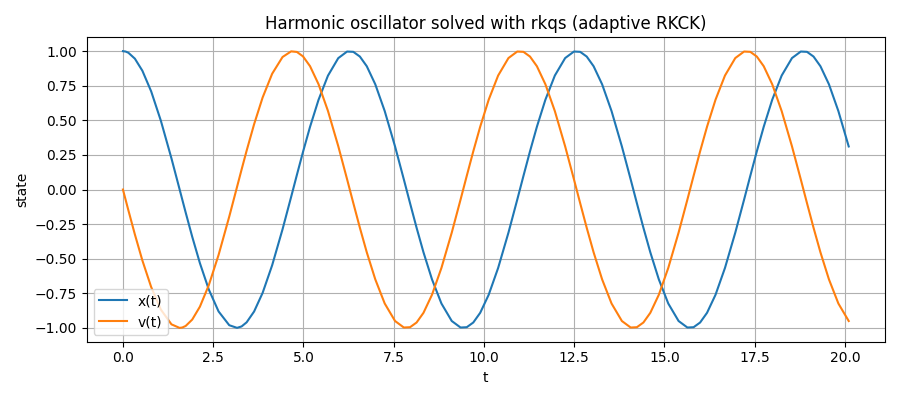

Numerical Integration functions¶
_rkck¶
Signature¶
_rkck(y: np.ndarray, dydt: np.ndarray, t: float,f: Callable, dt: float, args: tuple = ()) -> Tuple[np.ndarray, np.ndarray]
Purpose¶
Perform one embedded Runge-Kutta Cash-Karp step (the classic 5th-order method with a 4th-order ebedded estimate)
Parameters, returns and Raises¶
Parameters
- y (array_like): Current state at time t.
- dydt (array_like): Derivative dy/dt at (y, t), usually f(y, t).
- t (float): Current integration variable (independent variable).
- f (callable): Derivative function with signature f(y, t, *args).
- dt (float): Step size.
- args (tuple, optional) Extra positional arguments for f (usualy defaults)
Returns
- dyout (ndarray): The 5th-order increment Δy to update the state: y_next ≈ y + dyout.
- yerr (ndarray): An estimate of the local truncation error for the increment (the difference between 5th and 4th order formulas)
Raises¶
- No custom exceptions.
When to use¶
This function is used by the function below (rkqs) to solve the desired ODE and therefore is not called directly.
(That's why there are no examples of it)
rkqs¶
Signature¶
rkqs(y: np.ndarray, dydt: np.ndarray, t: float, f: callable, dt_try: float, epsfrac: float, epsabs: float, args: tuple = ()) -> _rkqs_rval
Purpose¶
Perform one adpative step of the (RKCK) method with error control
It's the acceptance/rejection + step control wrapper around the low-leve _rkck step.
The function has larger steps when the error is very small and decreases the step when the error becomes large.
This ensures accuracy and speed in solving the integral.
Parameters, returns and Raises¶
Parameters
- Same as _rkck (y, dydt, t, f, dt and args) plus:
- dt_try (float): Initial step-size guess
- epsfrac (float): Relative error tolerance (dimensionless)
- epsabs (float): Absolute error tolerance (same units as y)
Returns
- named tuple _rkqs_rval[Delta)y, Delta_t, dtxt]
- Delta_y (ndarray): 5th-order increment to advance the state: y_next ≈ y + Delta_y.
- Delta_t (float): The actual step size used on the accepted step (may be smaller than dt_try).
- dtxt (float): A suggested step size for the next call (based on the observed error)
Raises¶
IntegrationError: If the step size underflows numerically (i.e.,t+dt==t) after repeated shrinking)
How to use and Examples¶
- The error is handled as follows:
- With the relative error
epsfracevaluatedenom = y * epsfrac - With the absolute error
epsabsevaluateerr_ratio = |yerr| / max(denom, epsabs) - Then take errmax = max(err_ratio) and
if errmax <1accept pace. Otherwise compute a reduced dt until accepted -
After acceptance, propose dtnxt (x5 if the step was extremely accurate and reduced if the error was not so accurate)
-
Start with
epsfrac ~ 1e-6(relative) andepsfrac ~ 1e-9(absolute) for typical float64 runs. - There is no predefined formula for errors, just trial and error with the desired ODE
see the full test script in tests/helper_functions/Numerical_integration for more There are one more image and two more prints examples there. Examples
# Minimal usage pattern (pseudo-code)
y = y0.copy()
t = t0
dt = dt_try
while t < t_end:
dydt = f(y, t, *args)
Delta_y, Delta_t, dtnxt = rkqs(y, dydt, t, f, dt, epsfrac, epsabs, args)
y += Delta_y
t += Delta_t
dt = dtnxt

- Adaptive step sizes